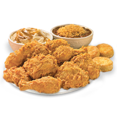

1 WAFFLE FRIES CHICK-FIL-A
MICAH PETERS: You know the scene in Scott Pilgrim vs. the World where Scott tells Ramona that, were he to have his way, he’d eat garlic bread forever without ever having to stop? I could probably do that with Chick-fil-A waffle fries. Except then I'd get fat. Fries make you fat.INTRODUCED: 1985 PRICE: $2.11 CALORIES: 400

2 DOUBLE-DOUBLE IN-N-OUT
RILEY MCATEE: There's one small change that can take the Double-Double from “best burger ever” to “literal perfection between two buns.” Ask for grilled onions—instead of the sliced onion—the next time you order one. It gets you halfway to Animal Style for free.INTRODUCED: 1963 PRICE: $4.04 CALORIES: 670

3 FRIES MCDONALD'S
LINDSAY ZOLADZ: There is a semi-fancy bar that my friends and I like to go to, and we always order a big bowl of their fries because they taste like McDonald’s fries. No matter how fancy the restaurant, “Tastes like McDonald’s fries” is the highest compliment you can give a french fry. Also, no other fast-food item has a Kanye West poem written about it. “I don't trust no food that smells that good, man,” he says of the fries in “McDonald’s Man.” There is no competition; this is the most foolish thing Kanye West has ever said.INTRODUCED: 1949 PRICE: $2.29 CALORIES: 340 (MEDIUM)

4 CHICKEN POPEYES
K. AUSTIN COLLINS: The only bad thing about Beyoncé is that she has a lifetime of free chicken at Popeyes but, being a vegan, can't take advantage of it. Imagine having unfettered access to that succulent meat and those perfectly crisp and savory flaps of fried skin every day. OK—so some of us are already practically living that life. But imagine living it for free.INTRODUCED: 1972 PRICE: $6.77 CALORIES: 440 (MILD CHICKEN BREAST)

5 CHICKEN SANDWICH CHICK-FIL-A
HANNAH GIORGIS: The Chick-fil-A chicken sandwich is transcendent. The perfect combination of a generous portion of breaded chicken, soft bun, and tart pickles, it's enhanced by only one thing: Polynesian sauce.INTRODUCED: 1964 PRICE: $3.90 CALORIES: 440
6 CURLY FRIES ARBY'S
MEGAN SCHUSTER: Picture some of the best things in life: grandiose spiral staircases; chocolate-vanilla swirl ice cream cones; Slinkies descending slowly down steps. What do they all have in common? Their shape. Apply that same shape to salted, deep-fried potatoes, and of course you'd end up with perfection in physical form: Arby's curly fries.INTRODUCED: 1988 PRICE: $2.55 CALORIES: 400 (SMALL)

7 BLIZZARD DAIRY QUEEN
JACK MCCLUSKEY: Certain foods become more about who you eat them with than how they taste (or nutrition, of course). For me, the Dairy Queen Blizzard is about my wife, about warm summer nights, about sitting and chatting between delicious bites of soft serve swirled with treats (usually Oreo for me). It’s one of the best parts of summer.INTRODUCED: 1985 PRICE: $5.24 CALORIES: 620 (OREO, SMALL)